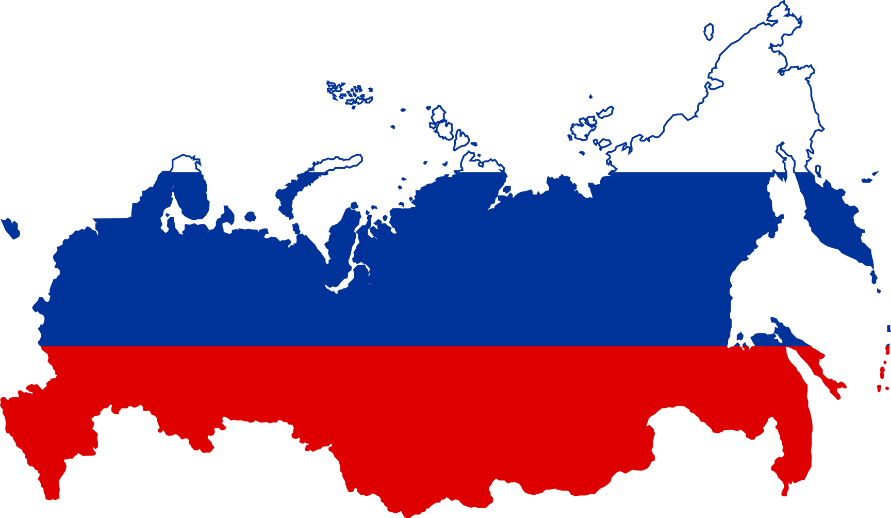
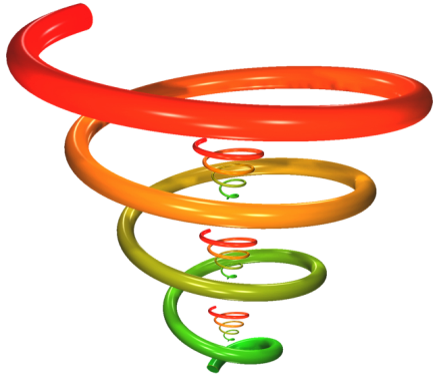
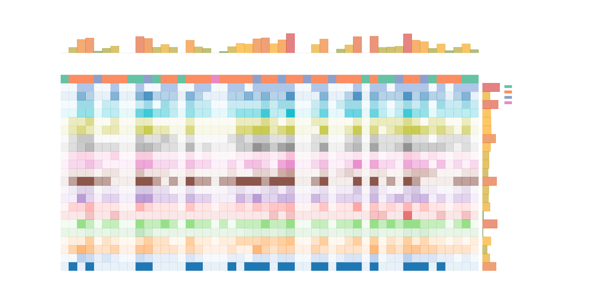

1 / 12
RuBase / StratBase
AI-Augmented Defense Research
Decoding Russian Military Power Through Computational Intelligence
Stephan De Spiegeleire (HCSS) & Adam Stulberg (Georgia Tech)
IRSEM Paris | March 28, 2026
2 / 12
From Traditional Analysis to AI-Augmented Intelligence
- Reading 100 papers ≠ systematic analysis when 100,000+ exist
- Major multilingual challenges — Russian, Chinese, and other non-Latin sources
- IR and strategic studies lagging 10+ years behind computational methods
- Academic analysis remains disconnected from decision-makers
We need a bridge between the scholarly corpus and the policy world.
3 / 12
From Data to Decisions: The ‘Real’ IR vs ‘Our’ IR
DECISIONS
change, movement
INSIGHT
applied, actionable
KNOWLEDGE
contextual, synthesized
INFORMATION
useful, organized
DATA
raw signals, observations
given purpose, becomes ↑
given focus, becomes ↑
given meaning, becomes ↑
given context, becomes ↑
RuBase rebuilds this pyramid from the ground up.
4 / 12
RuBase — What's in a Name
Ru–
A knowledge base on Russia
–Base (triple meaning)
- A knowledge base on Russia
- Rebuilding the base of the DIKW pyramid
- A new base/foundation for better collaboration across researchers, analysts, and decision-makers

5 / 12
RuBase Approach: Spiral Development

TEXT
- Building text corpora
- Assembling textmining tools
- Textmining the text corpora
DATA
- Collating and joining existing datasets
- Assembling datamining tools
- Building new datasets
- Meshing text × data
COLLABORATION
- New forms of collaboration
- Interaction with SMEs
- Exploitation & sustainability
6 / 12
Our RuBase Corpus
2.2 million
Documents Processed
3
Languages
7
Major Source Families
- Russian official: State Duma, Federation Council, official Telegram channels
- Russian scholarly: RFSDP, Integrum aggregator, military journals
- English-language: Western academic & policy literature
- Chinese-language: CNKI scholarly database on Russian military affairs
7 / 12
Multi-Dimensional Taxonomy
3 layers of taxonomic elements — from broad strategic domains to granular indicators

8 / 12
Visual Analytics: Slice, Dice, Compare

9 / 12
From Data to Decision-Maker: The Whole Shebang
Corpus
→
Middleware Reports
→
25-Page Brief
→
ExSum
→
Podcast
→
Vodcast
→
Slides
- Full middleware reports: 500–1,600 pages of structured AI analysis
- Standardized sunburst visualizations across all projects
- Multi-format delivery: tailored to each audience — from analyst to minister
10 / 12
Russian Self-Perceived Strengths & Weaknesses

11 / 12
7 Completed Projects
01
Red Lines
Putin's escalation rhetoric & nuclear signaling
02
Transparent Battlefield
Data fusion & ISR in Russian military thought
03
Grey Horizon
Non-linear warfare & hybrid operations
04
Glass Wall
Russian perceptions of Western deterrence
05
WACKO
Philosophical roots of Russian strategic culture
06
Russian Military Space
Space doctrine, capabilities & counter-space
07
Strengths & Weaknesses
Military regeneration & force sustainability
12 / 12
European Analytical Sovereignty
- HCSS (The Hague) + IRSEM (Paris) = Europe's leading computational Russia analysis
- Building indigenous European capacity for AI-augmented strategic intelligence
- Time to lead, not follow — the tools and data are here
1 / 12